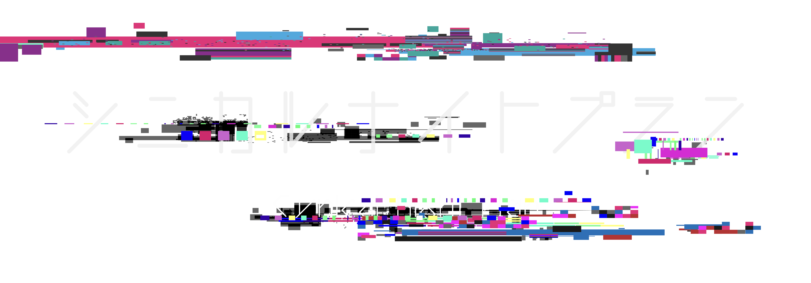
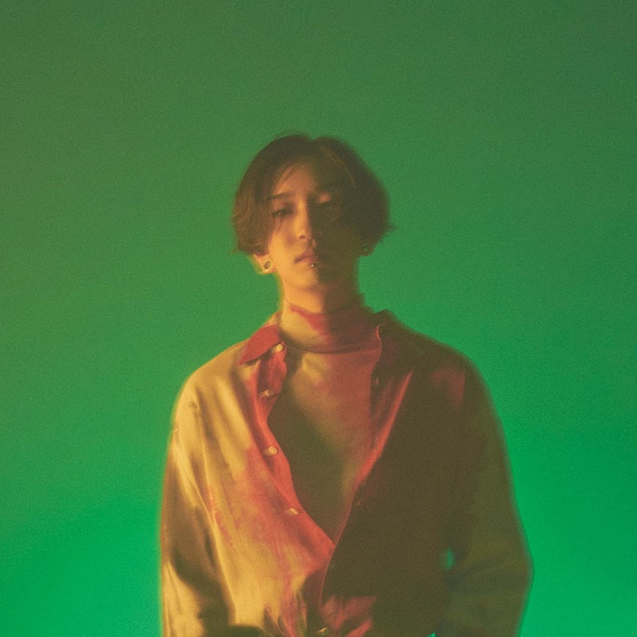
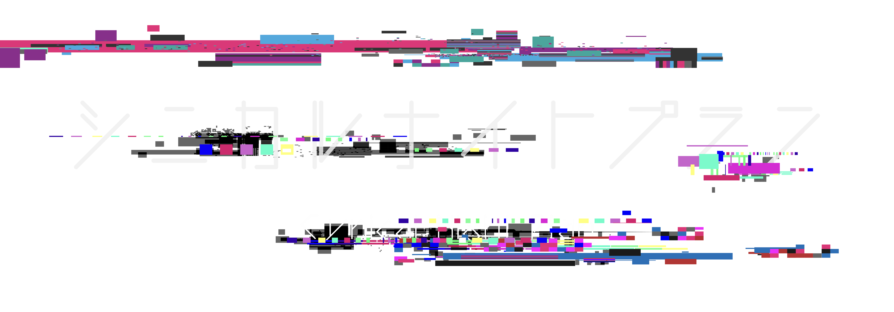
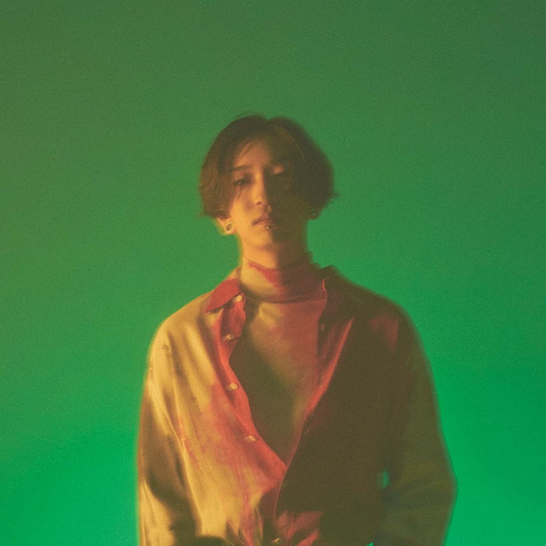
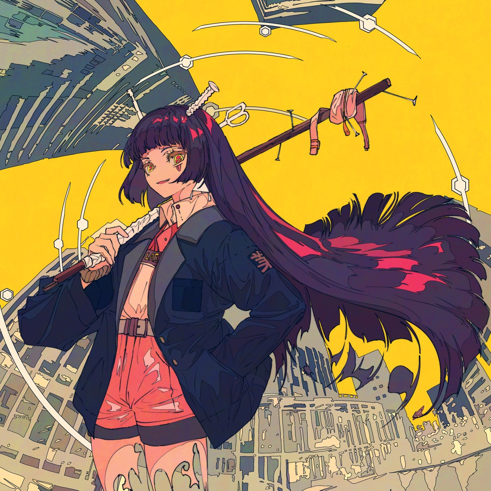
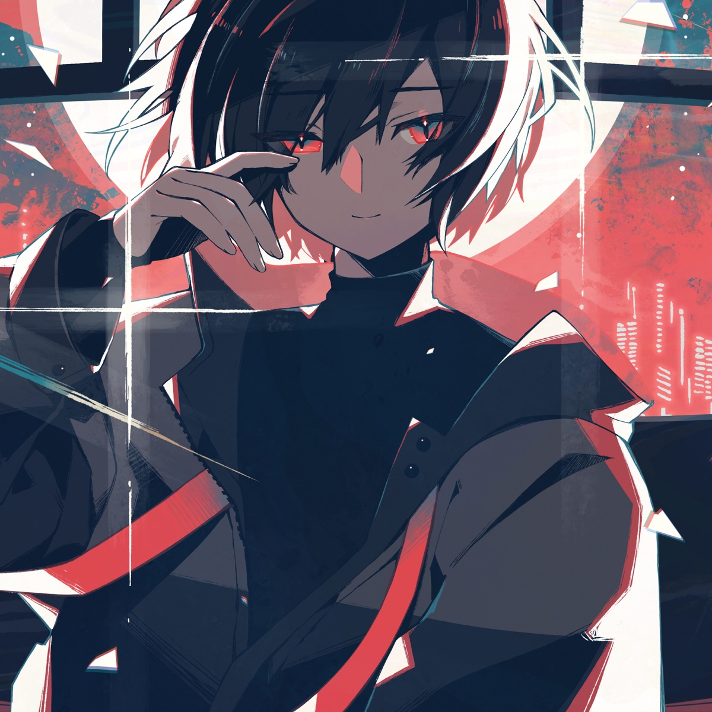
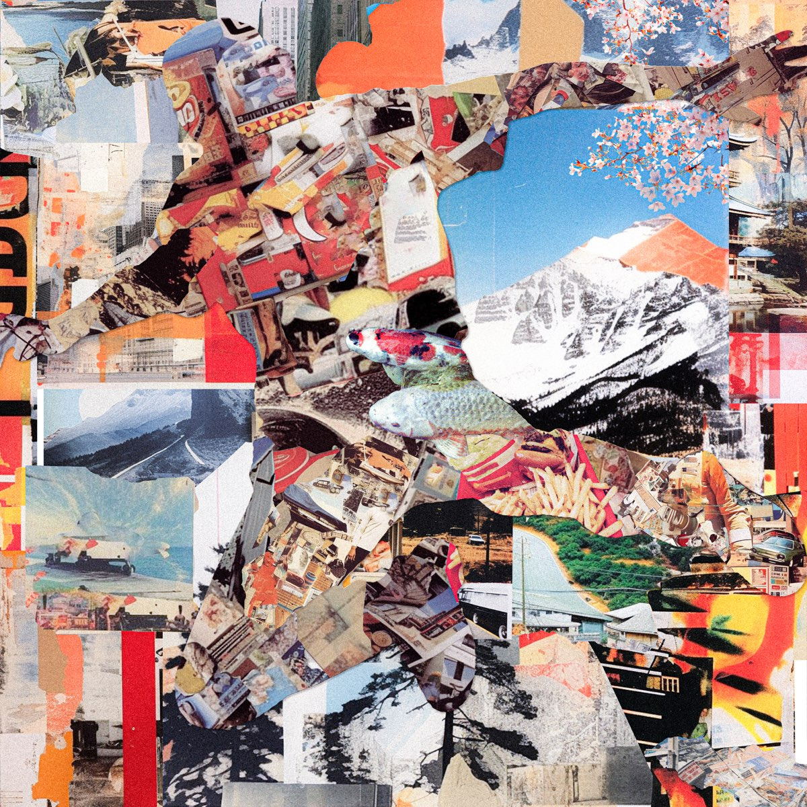

Ayase
F# Minor / ??? BPM
「シニカルナイトプラン (Cynical Night Plan)」 by Ayase (Ft. Hatsune Miku)の意味を解釈すると、この曲は秘密、欲望、および関係の複雑さといったテーマに深く踏み込んでいるようです。歌詞は親密さへの渇望と日常の束縛からの解放を示唆しています。アーティストは間違いと不確かさのゲームに参加する意思を表現しています。一文の「私のフリした私で良ければどうぞ」は、異なる方法で自分自身を表現したいという願望を示唆しているかもしれません。おそらく、自分の性格の異なる側面を探求することを意味しています。
コーラスでは、自分を切り離し、ぼやけたような感覚が語られています。ユニークに見られ理解されたいという願望があり、からかわれたり嘲笑されたりせずに、特別な存在として見てもらいたいという感情が表れています。"Buy me, So feeling"というリクエストは、自分自身の真実の姿を評価または理解されたいという願望を示すかもしれません。2番では、規範を破りたいという欲望と規則に従うことの間での葛藤が認識されています。アーティストは他の誰かと一緒に赤信号を横断する可能性を問い直し、それは思ったよりも退屈ではないかもしれないと提案しており、反抗的な態度が強調されています。
3番では、操作というアイデアが導入され、アーティストは欺かれ、他人を欺いて危険で予測不可能な状況に導く描写がなされています。身体的にも感情的にも堕落が避けられないという受け入れがあります。ブリッジでは、秘密と探求心への願望が強調され、それに伴うスリルと潜在的な結果が強調されています。"触れてみたい秘密を壊して知る夜の味を"の繰り返しは、未知のものを受け入れ、それがもたらす興奮を経験する意欲があることを示唆しています。全体的に、「シニカルナイトプラン (Cynical Night Plan)」は人間の欲望の複雑さ、つながりへの渇望、関係の予測不可能な性質を探る夜に満ちた秘密と不確かさを探求しています。



Interpreting the meaning behind "シニカルナイトプラン (Cynical Night Plan)" by Ayase (Ft. Hatsune Miku), the song seems to delve into themes of secrets, desires, and the complexity of relationships. The lyrics in the song suggest a desire for intimacy and an urge to break free from the mundane. The artist expresses a willingness to engage in a game of mistakes and uncertainties. The line "私のフリした私で良ければどうぞ" (If you're fine with me pretending to be me) implies a desire to present oneself in a different way, perhaps exploring different aspects of one's personality.
The chorus talks about feeling detached and blurry, like a scenery that fades away. There is a sense of longing to be seen and understood uniquely, without being teased or ridiculed. The request to "Buy me, So feeling" might signify a desire to be valued or appreciated for who they truly are. In the second verse, there is an acknowledgement of the contradictions and the struggle between wanting to break conventions and following the rules. The artist questions the possibility of crossing a red signal with someone else and suggests that maybe it's not as boring as it seems, highlighting a rebellious attitude.
The third verse introduces the idea of manipulation, as the artist describes being deceived and deceiving others, leading to a dangerous and unpredictable situation. There is an acceptance of the inevitability of falling, both physically and emotionally. The bridge reinforces the desire for secrets and exploration, emphasizing the thrill and potential consequences that come with it. The repetition of "触れてみたい秘密を壊して知る夜の味を" (I want to touch the secrets and taste the night that breaks them) suggests a willingness to embrace the unknown and experience the excitement it brings. Overall, "シニカルナイトプラン (Cynical Night Plan)" explores the complexities of human desires, the longing for connection, and the unpredictable nature of relationships in a night full of secrets and uncertainties.
Japanese text fromtranslated from ChatGPT-3.5,Open AI
English text from Meaning of シニカルナイトプラン (Cynical Night Plan) by Ayase (Ft. 初音ミク (Hatsune Miku))
English text from Meaning of シニカルナイトプラン (Cynical Night Plan) by Ayase (Ft. 初音ミク (Hatsune Miku))